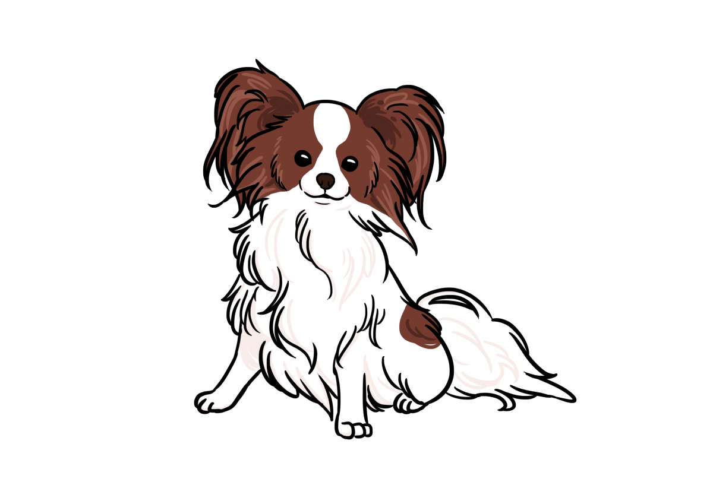
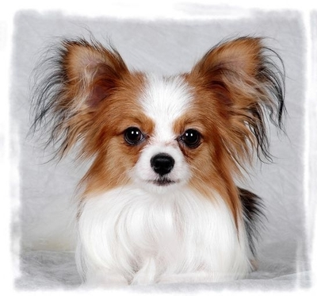
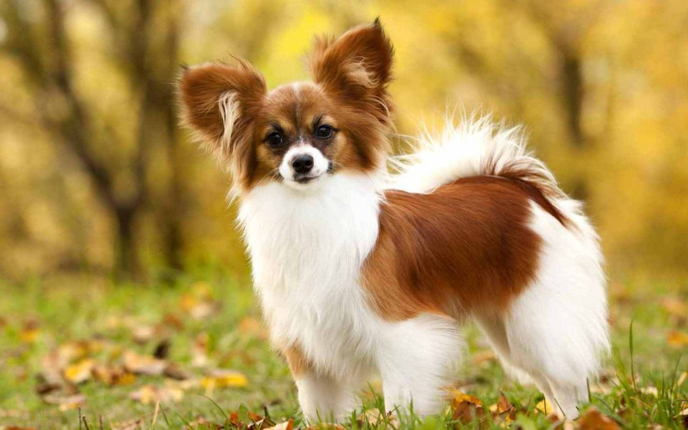
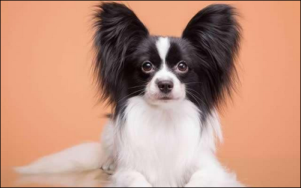

蝴蝶犬

外表
身高28厘米以下，體重3.6～4.5公斤，壽命10-14歲，體高20~28cm。毛色有黑色和白色、褐色和白色、或白色和黑色帶有棕褐色斑塊。該犬兩耳直立外展，酷似蝴蝶的翅膀而得名。
性格
該犬性格平和，活潑、順從、適應性強，適合作伴侶犬。性格上，友善開朗，優雅美麗。
歷史
蝴蝶犬(Papillon)，又稱「蝶耳犬」和「巴比倫犬」。原產於法國，法語中Papillon就是蝴蝶的意思。起源於十六世紀，是歐洲最古老的品種之一。蝴蝶犬引進法國後，當時出入法國皇宮和貴族之門，成為權貴貴婦的掌中珍寶。在保存下來的16世紀時期西方藝術作品上，常可見到牠神采飛揚的姿容。
飼養注意事項
夏天容易因細菌感染罹患皮膚病
如沒有足夠的安全感，會因不安而吠叫
易罹患外耳炎，特別是梅雨季節時要清理耳朵
好發遺傳性膝關節脫臼，請小心別讓狗狗從高處跳下


